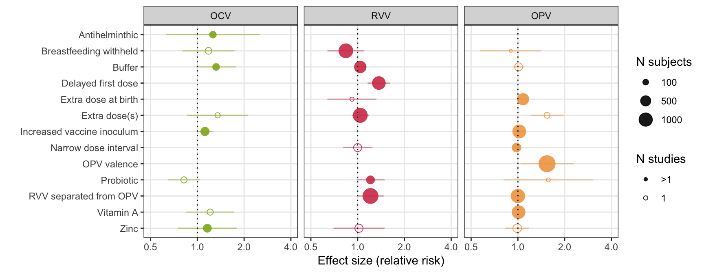

Meta-analysis of oral vaccine interventions
Select intervention
Antihelminthic
Breastfeeding withheld
Buffer
Delayed first dose
Extra dose at birth
Extra dose(s)
Increased vaccine inoculum
Narrow dose interval
OPV valence
Probiotic
RVV separated from OPV
Vitamin A
Zinc
Summary
Footnotes
Summary of intervention effects
## Warning: Removed 9 rows containing missing values (geom_point).
